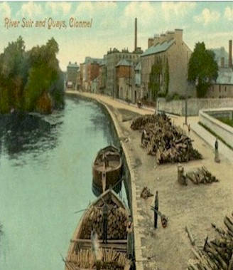

The Quays

The Suir has played an important part in Clonmel's history - as a means of access, defence, commerce, recreation and power for the mills.
The Medieval quays stretched the length of the river bank beyond the south walls of the town. Shortly after 1765 these walls were levelled to allow the quays to be extended.
Between 1775 and 1840, economic development, an agricultural boom and use of the river for cheap transport helped to make Clonmel one of the most important commercial and industrial inland towns in Ireland.
Initially agriculture gave the boost, with most of the grain in Tipperary and a large amount from Munster passing through the town. The barges were a cheap way of transporting heavy bulk grain efficiently and relatively quickly.
The formation of the River Suir Navigation Company between 1836 & 1841, and the deepening of the river between Clonmel and Carrick meant that vessels up to 200 tons could dock at Clonmel. In 1920, after a long struggle with rail transport, the barges ceased to sail and the towpaths became walkways for the public. During the town drainage scheme in 1992,the quays were rebuilt and the original townpaths lost. However, the bollards for tying the barges remain.
The river, which once brought raiders, traders and missionaries, is now used for boating, fishing and swimming.
The huge buildings by the quays show how important an individual town Clonmel was in former times. In 1832 there were 23 mills in the area, mostly owned by the Quakers. Other industries included tobacco, tanning, wool and brewing.
Murphy's stout brewery was one of the most important industries in the town from 1798 to 1924. The building was then used as a shoe factory until more recent times. At the peak of its commercial greatness, Clonmel was the largest inland trading town in the country.
© 2004 Places to see in Clonmel.
I